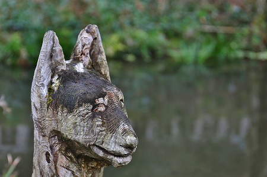
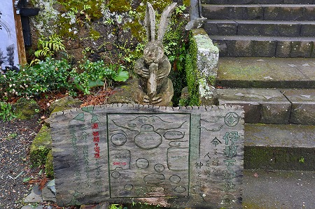

西伊豆の松崎町にある
伊那下神社。
ここに奇妙な彫刻が並んでいるという噂を聞いたのはずいぶん前の事だが、私は半信半疑だった。
というのもこの神社には以前何度か訪れたことがあり、その際にはそのような彫像がなかったからなのだ。
今から30年近く前、私は度々松崎を訪れていた。
その頃、松崎町は建築家の石山修武氏と共に実にユニークな町おこしをしていた。
その冒険譚に魅了された私はしょっちゅう松崎を訪れ、その小さな町を隅から隅までウロウロしていたのだ。
この神社は町おこしの起爆剤だった長八美術館の隣だったので、松崎を訪れた際に必ずと言っていいほど寄っていた。
その頃は
いたって普通の神社だった…はず。
で、今回改めて訪れてみると、以前の伊那下神社とはずいぶん趣が変わっちゃっている。
むむむ…。かなり
私好みな佇まい方面にシフトされているようで悦ばしい限りですぞ。
駐車場付近には水が湧いているのだが、その周辺に集中的に
荒々しい木彫りの彫像が林立している。
多くは動物の像で、どれもが鉈彫りのような荒々しい作風だ。
湧き水が流れ込む小さな池にも彫像が並んでいる。
見ざる言わざる聞かざるとか。
あとは湧き水を動力とした水車とか。
美し国
日本！
ピースポールの上にもフクロウが乗っていたりする。

犬？

タイ？
？？

クマ…かな？
ワシ。
天狗。

妙ににぎやかな感じの水琴窟。
ウサギは何を持っているのやら。
作られてから数年経っているものもあり、中には結構黒ずんでいるものも多い。
精霊の森というのだそうな。

ご覧いただいてお判りかと思うが、これらの彫像はプロの作品ではない。
ここの宮司さんがチェーンソーで作り上げた作品なのだ。
20年ほど前に本殿脇にあった大木が朽ちて倒れ、社殿や本尊が壊れてしまった。
その倒れた巨木から3体の神像を彫り出したのがきっかけだという。
道理で30年前来た時には何もなかったわけだ。
翁に導かれ、拝殿へ。
お婆さんが一人参拝していた。
本殿の脇に七福神を祀る社があった。
…。
その中に祀られていたのが最初に宮司さんが手掛けた神像なのだろう。
先ほどの動物たちに比べて規模が大きい。
境内の護国神社の脇にも彫像が。
チョット仮面ライダーに出てきそうな感じ。
チェーンソーで彫っているという割には細かい表情とか表現されているのではないでしょうか。

勿論細部はノミで仕上げるのだろうが。
新聞の記事を見ると、これは
伐採されてしまった木に再び命を吹き込む作業なのだとか。
倒れたら危ない、とか落ち葉が迷惑だ、といった人間の都合で伐採された木を哀れに思い、精霊として再生させるという事のようだ。
木もまたひとつの命なり、という宮司さんの熱い思いが伝わってくる。
荒々しい彫像だが、むしろ荒々しいだけに、伐採された木々の念のようなモノが伝わってくるような気がしてならない。
一見、ユーモラスな彫像だが、そこには色々なものが内包されているのだ。
私はパワースポットとか信じないタチだが、この神社に限って言えば
宮司さんの造形パワーに満ち溢れた素晴らしい場所だと思う。
帰りに神明水と呼ばれる湧き水を一口いただいた。
ああ、これは天から降ってきた雨が木々を伝い、大地に滲み、岩の間を縫って再び地表に現れた水なんだなあ…。
と思ったら、ただの水だけど妙に美味しく感じちゃいますよね。いや、ホントに美味しかったです。